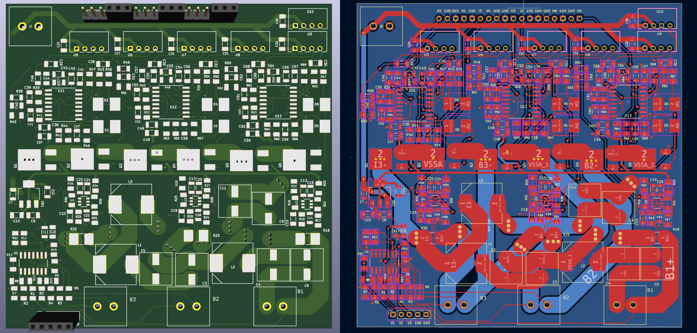
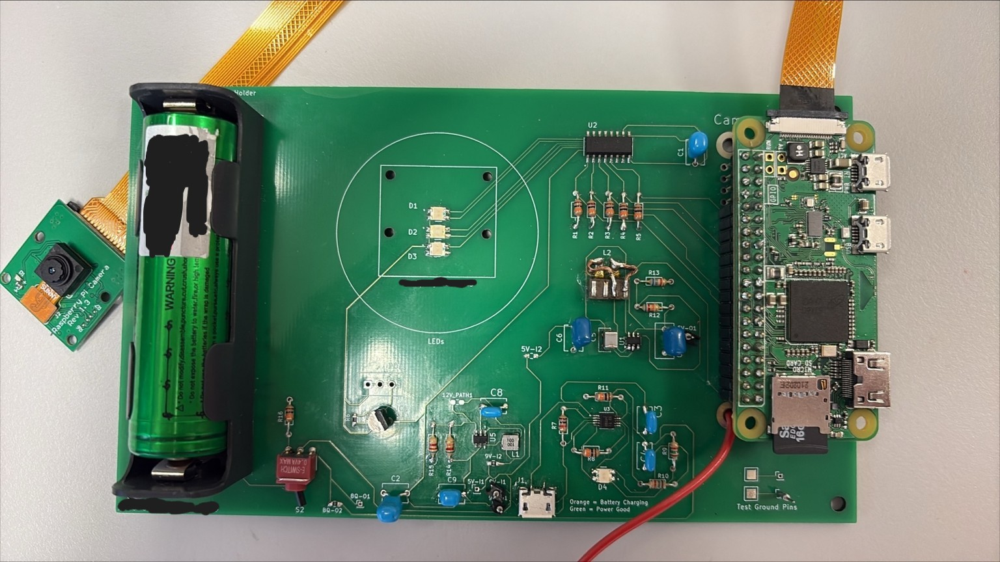
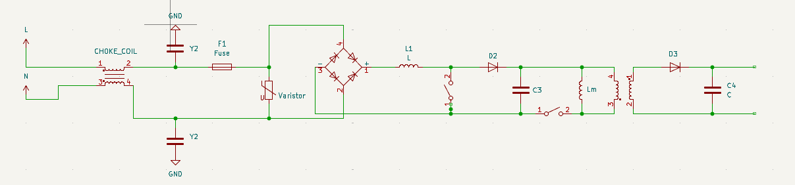
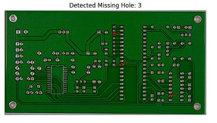
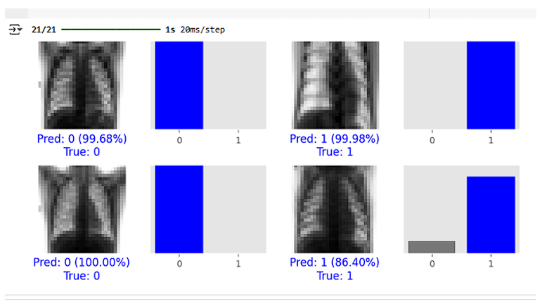
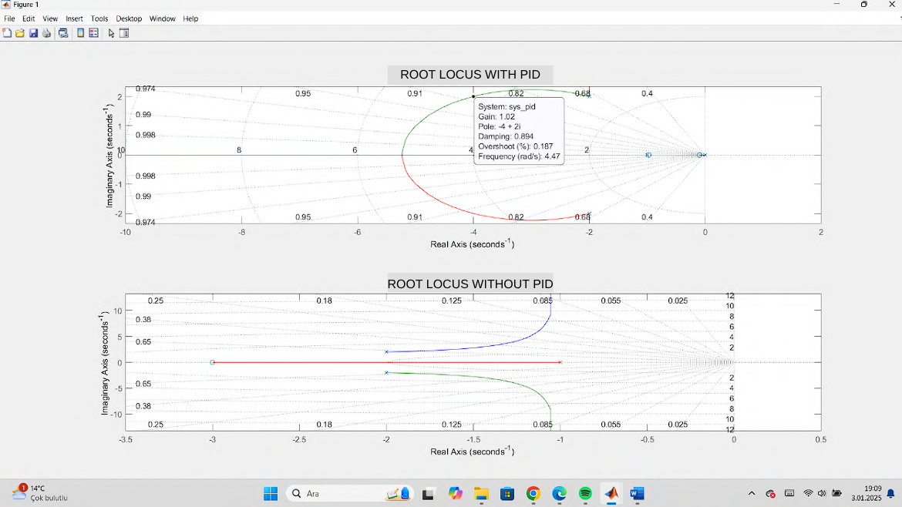
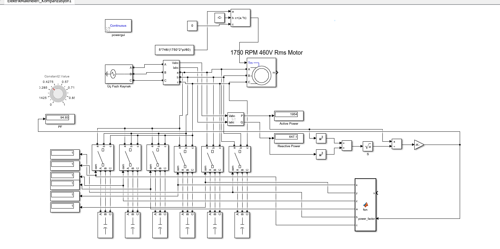

Hi, I'm
Yahya Ahmet Öğütcü
Electrical & Electronics Engineer
Graduate of Bursa Technical University. Specializing in Hardware Design, Power Electronics, and Battery Management Systems, while developing multidisciplinary projects in AI, image processing, and embedded systems.
About Me
Education
Bursa Technical University
B.Sc. in Electrical & Electronics Engineering
Experience
Università di Bologna
Engineering Intern — Prof. Marco Tartagni
One of Europe's oldest and most prestigious universities, founded in 1088. Worked at the Advanced Research Center on Electronic Systems (ARCES) under Prof. Marco Tartagni.
Tasks: Designed a portable multispectral imaging PCB using KiCad, integrated Raspberry Pi camera module, implemented battery-powered LED illumination control system.
unibo.itErna MAŞ
Hardware Engineering Intern — Technology & Software Dept.
Turkish engineering company specializing in industrial automation, electrical panel design, and embedded system solutions.
Tasks: Worked in the Technology & Software Department as a hardware engineering intern. Responsible for designing power supplies for circuit boards and preparing technical documentation and reports.
ernamas.comNG Ceramic
Engineering Intern
One of Turkey's leading ceramic and tile manufacturers based in Kütahya, operating large-scale industrial production lines.
Tasks: Observed and analyzed electrical infrastructure of industrial ceramic production lines, studied motor drive systems, power distribution panels, and factory-scale automation.
ngkutahyaseramik.com.trMertek Engineering
Engineering Intern
Turkish electrical engineering firm providing services in electrical installation, energy distribution, and power systems for commercial and industrial buildings.
Tasks: Participated in electrical installation projects, power distribution system design, site surveys, and technical documentation preparation.
mertekelektrik.comReferences
- Prof. Marco Tartagni
Università di Bologna, Italy - Dr. Aykut Bıçak
Bursa Technical University, Turkey - Levent G.
Erna MAŞ, Turkey
Skills
Hardware & Embedded
Power & Simulation
Software & AI
Other Tools
Selected Projects
Showcasing 7 highlights from my 20+ completed projects.

Active Battery Balancing System for Electric Vehicles
Novel dual-tier quasi-resonant active cell balancing topology. Achieved Zero Current Switching (ZCS), reducing peak current from 120A to ~15A.

Multispectral Imaging System
Portable multispectral imaging PCB with Raspberry Pi camera integration and battery-powered design, developed at Università di Bologna.

AC-DC Power Supply Design
Switched-mode power supply with EMI filter, bridge rectifier, PFC stage, isolation transformer, and LC output filtering. Simulated in PSpice.

PCB Defect Detection — Image Processing
Automated quality inspection system detecting missing holes on PCB boards using OpenCV segmentation and contour analysis.

ANN — Medical Image Classification
Deep learning model for binary classification of chest MR images, achieving 99%+ prediction confidence using TensorFlow/Keras.

Automatic Control Systems Project
PID controller design with root locus analysis, Bode diagrams, and step response optimization. Comparative study of controlled vs. uncontrolled systems.

Power Factor Compensation
Simulink-based automatic power factor correction for an asynchronous motor using delta-connected capacitor banks.
and 14+ more projects...
Signal processing, embedded systems, IoT, FPGA, analog circuit design, power electronics simulations, and more.
Browse on GitHubCertificates & Awards
IELTS - Academic
Overall: 8.0Power Electronics Simulation
MathWorksSimscape Onramp
MathWorksSimulink Onramp
MathWorksCrash Course Electronics & PCB
UdemyAlgoritma ve Python
BTK AkademiGet in Touch
Feel free to reach out for project collaborations, job opportunities, or any questions.